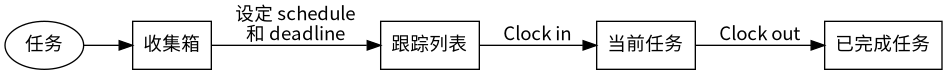
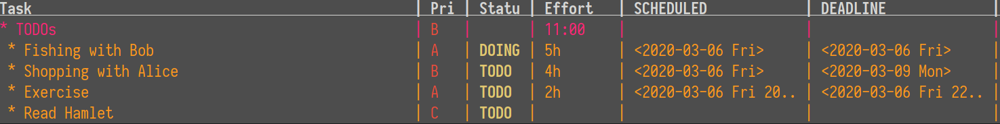

使用 Emacs 与 Org mode 进行 GTD 管理
在接触 Emacs 以前，我的时间管理方式主要是利用清单软件建立待办事项，辅以纸笔随手 记录当前的临时任务。但这种方式最大的弊端是不能分项目进行记录，所有事项都堆在一起。 另外，完成的事项也不方便归档整理。早就听说了 Emacs 以及 Org-mode 的强大，也觊觎 网上大神用 Org-mode 做日程管理很久了，因此在此设计一个自己的 GTD 工作流。
1 基本想法
- 从空间尺度上，不同项目隶属于不同的 Org 文件，而不同的 Org 文件加入到不同的 agenda 中，实现基于项目的管理方式。
- 从任务类型上，任务分为一次性任务以及周期性任务（Habit）。
- 从时间尺度上，任务可以按照需要投入的时间（Effort estimate），可以分为年任务、 月任务、周任务、日任务、小时任务等。如果任务的 Effort 太大，我们也就无法很好 地把握任务的进度以及投入，此时我们也就需要将其拆分为更小的任务。
2 整体流程
参照 皮波迪 的博客 以 Emacs Org mode 为核心的任务管理方案，设计适合自己的工作流。
如以下流程图所示，可将任务分为四个阶段。
- 首先一旦出现一个任务，就将其加入到 收集箱 中。这些任务代表出现的灵感或者想法， 但暂时还未想好在何时完成。
- 当收集箱中的任务想要被完成时，就为其加上 schedule (
C-c C-s) 和 deadline (C-c C-d) 时间戳，进入 跟踪任务列表 。这些任务代表已经做好计划的任务，同时也可为任务 设定预计投入时间 (C-c C-x e)。 - 当有跟踪列表中的任务到达计划的执行时间时，执行 clock in (
C-c C-x C-i)，同时任 务进入 当前任务 状态。 - 当任务完成时，执行 clock out (
C-c C-x C-o)，任务进入 已完成任务 状态。

3 任务拆分
对于耗时较长的非周期任务，需要拆分成更小的任务来进行处理。大型的任务可以作为单独 的项目放在单独的 Org 文件中，并使用如下的代码为该项目设定一个单独的 agenda。
(setq org-agenda-custom-commands '(("n" "Agenda and all TODOs" ((agenda "" nil) (alltodo "" nil)) nil) ("pc" "Learn Org" agenda "" ((org-agenda-files '("~/Orgs/learn-org.org")) (org-agenda-overriding-header "Agenda for learning org mode")) ("~/export/learn-org.html"))))
其中， "pc" 为打开该 agenda 的快捷键， "Learn Org" 为项目的名称，
"~/Orgs/learn-org.org" 为绑定的 Org 文件， "Agenda for learning org mode" 为
agenda 上方显示的标题， "~/export/learn-org.html" 为导出 agenda 时的路径。设定完
成后，通过快捷键 <C-c a p c> 即可呼出自定义 agenda。
4 为任务添加更多属性
标签是一种非线性的组织方式，Org mode 中的每一个 headline 都支持标签。在 headline
使用快捷键 <C-c C-c> 即可管理标签。标签会根据层级结构自动继承，因此父标题的标签
会自动继承到子标题。
另外，Org mode 还支持键值对。该部分等以后研究明白再做记录。
5 查看任务概览
Org mode 中有一种叫做列视图的模式，可以将 headline 的属性以列视图的模式显示出来。
列视图可以在 org-mode 或 agenda-mode 中使用，快捷键为 <C-c C-x C-c> 。开启后每个
任务会以表格的样式显示。

将光标放置在任意一个处于列模式的行上，可用 <q> 退出列模式。列模式中显示的信息可
以自定义，定义方法如下，其中 Effort 后面的 {:} 是要将所有子任务的 Effort 求和。
(setq org-columns-default-format "%50ITEM(Task) %3PRIORITY(Priority) %5TODO(Status) %8EFFORT(Effort){:} %20SCHEDULED %20DEADLINE")
6 任务完成
(setq ;; 当标签转换为 done 时自动记录 close 时间 ;; 当标签转换为 done 时自动 clock out org-log-done '(time . org-clock-out))
7 任务回顾
<C-c C-x C-d> 查看各个任务的耗时与总和。